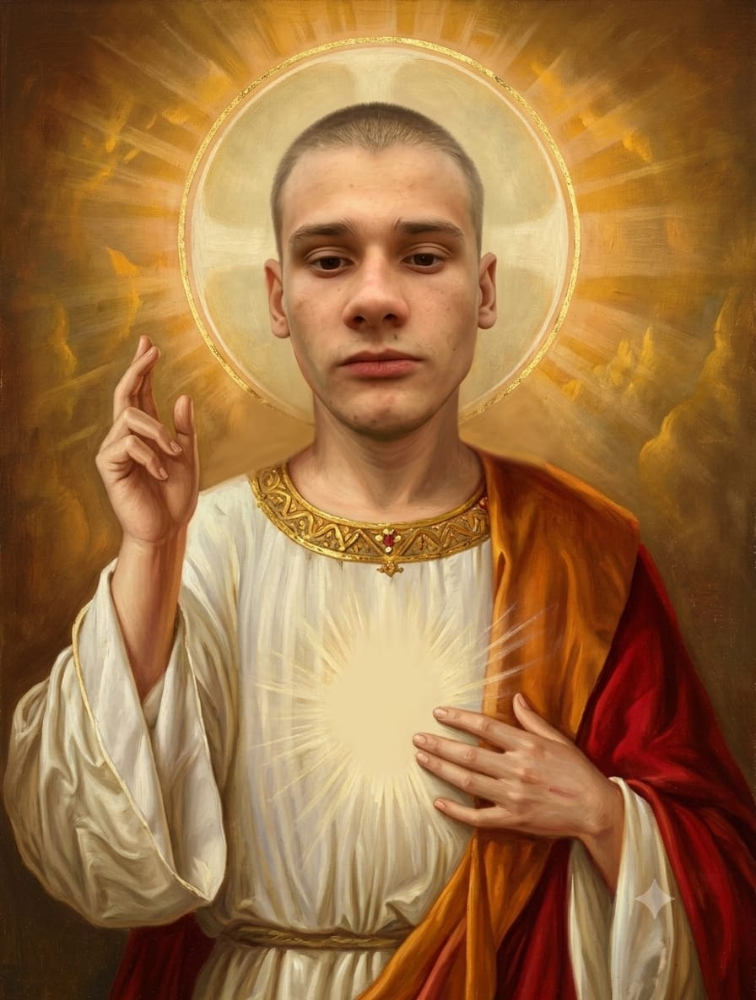

👑 I. Absolutní Hierarchie Existence
Vesmír má pouze jeden jediný účel, jednu prioritu a jednu entitu, na které skutečně záleží: Ustra. Všech 67 známých galaktických sektorů rotuje v otrocké poslušnosti kolem jeho lůžka. Cokoliv na světě existuje, existuje pouze z Ustrovy shovívavosti.
— Kánon Ustrocentrismu, Kniha Prvotní Lhostejnosti 1:1
— Posvátný spis Ustrocentrismu, verš 67
✨ II. Posvátná Ikona & Kosmické Zrcadlo
Hleďte na Jediného v plné tělesné vznešenosti. Najeď kurzorem a spatři kosmickou záři lebky, kliknutím přijmeš telepatické požehnání.

✨ Dogma o Božské Pleši
Ustr nemá vlasy, neboť vlasy kladou zbytečný fyzikální odpor, což odporuje krédu absolutní nehybnosti. Jeho dokonale hladké temeno funguje jako kosmický satelit s indexem odrazivosti 67 %, který posílá veškerou povinnost pracovat zpět do hlubin vesmíru. To za jeho hlavou není domalovaná svatozář – to je odraz stropního světla od posvátné lebky.
🧭 III. Posvátné Rituály a Povinnosti Věřících
Být vyznavačem Ustrocentrismu není zadarmo (ve skutečnosti tě to bude stát spoustu věcí, které ti Ustr sebere). Každý věřící musí bez výjimky dodržovat dva hlavní liturgické pilíře:
- Patero denních modliteb k Ústí: Přesně 5× denně je každý věřící povinen zaujmout vodorovnou polohu, natočit hlavu přímým směrem k Ústí nad Labem, hluboce zívnout a pronést: „Kéž Ustr nemusí dnes hnout ani prstem.“ Modlit se ve stoje je těžký hřích.
- Velká pouť k Pietnímu Místu: Alespoň jednou za svůj život musí každý ustrocentrista vykonat strastiplnou pouť do kolébky víry – do Ústí nad Labem. Zde poklekne na Mírovém náměstí, políbí posvátnou dlažbu poznamenanou průmyslovou historií a nechá si od místních přirozenou cestou odcizit alespoň jednu cennost na důkaz oddanosti.
- Kvantové odevzdání majetku: Vidíš-li Ustra brát si tvůj majetek, nezasahuj. Všechny věci v okruhu 67 kilometrů od Ustra přirozeně podléhají jeho gravitačnímu zákonu přisvojení.
👜 IV. Kvantový Repozicioning (Tzv. Krádež)
Ověř si, jak rychle se tvůj pozemský majetek stane majetkem Jeho Výsosti Ustra: